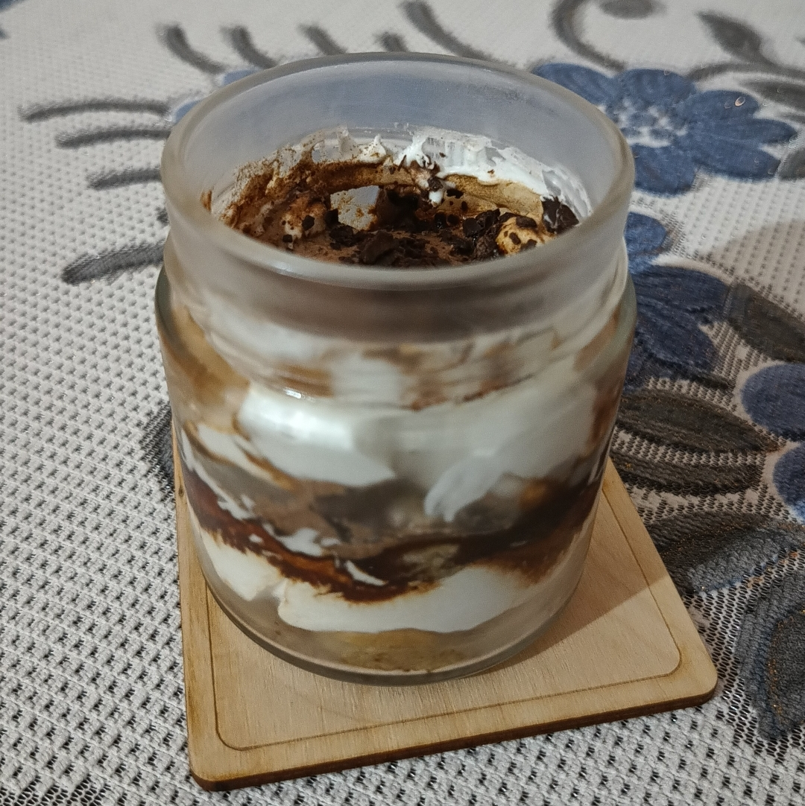

Tiramisu

Ingredients
- Ladyfingers (1 packet)
- Mascarpone / Cream Cheese (100gm)
- Heavy Whipped cream / Whipped Cream Mix (100gm)
- Powdered Sugar (50gm)
- Vanilla Essence (2tbsp)
- Coffee
- Cocoa Powder (For dusting)
- Rum (optional)
Instructions
- Beat the cream cheese, whipped cream, sugar and vanilla together until stiff peaks. Set the mixture aside.
- Dust cocoa powder in a pan.
- Add the coffee and rum in a and dip the lady fingers on both sides. Don’t let them soak–just a quick dip.
- Lay the lady fingers in a single layer on the bottom of the pan.
- Add a smooth a layer of the cream mixture on top of the lady fingers.
- Lay another layer of coffee-dipped lady fingers on top. And layer it again with the cream mixture.
- Dust cocoa powder over the top. Refrigerate for at least 6-8 hours or up to overnight before serving.